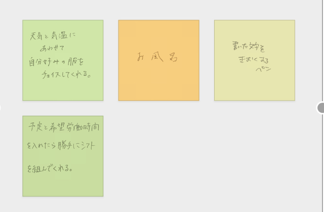
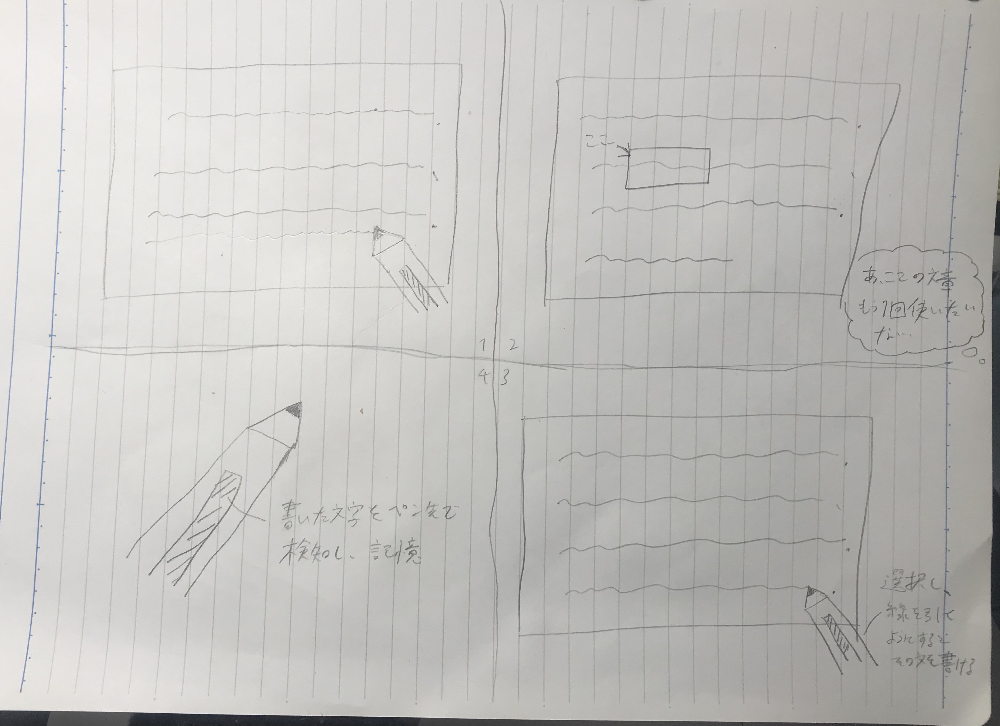

Iot（Internet of Things）とは、「モノのインターネット」を意味し,
定義としては、「モノ」（物理的なものデバイスや機器など）にインターネットを接続し、
活用した取り組みのための総称のことである。
グループワークで出た活用例は、以下の通りである。

さまざまな例が出されたが、主に次のようなグループ分けができた。
３の案の中でも、なぞるだけで字を読み取るペン型スキャナからアイデアを得た
「書いた文字を記憶するペン」を考えた。

近年のレポートなどでは、なかなか手書きのものはないが、
そんな今でも手書きで書かなければならない場面はいくらでもある。
そんな時、中でも、長文を書かなければいけない場合に同じ表現を使おうと思っても、
何度も書くのは正直めんどくさいことは多々あるだろう。
そんな時に、現代の文字読み取り技術を活用して、書いた文字を記憶し、
なぞるだけで字を読み取るペン型スキャナのようになぞるようにペーストする文房具があれば、
より手書き文章の作成がスムーズになるとかんがえられる。
さらに、Googleや翻訳亜プロなどの予測機能を応用すれば、より円滑により良い文章が書けるのではないかと考えられる。